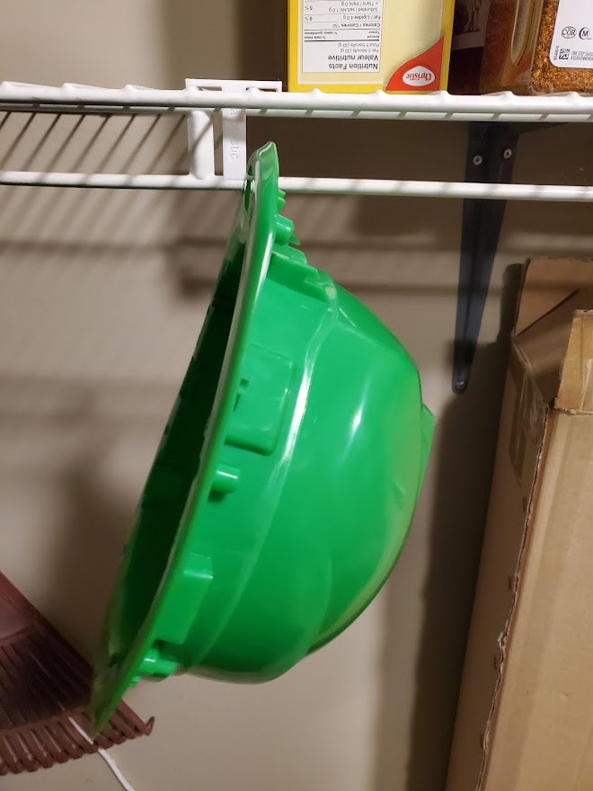
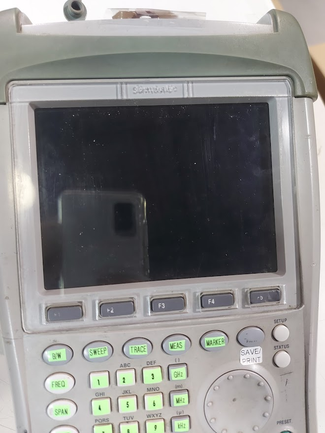
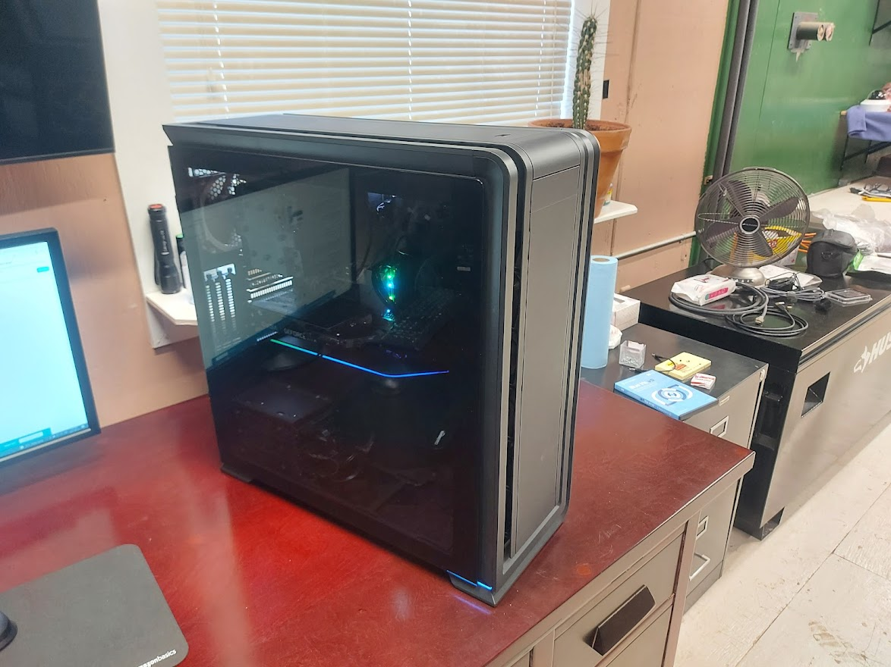

Practical Applications
Samtastic Helmet Bracket
My workplace needed a way to efficiently store hardhats while being assembled but also needed taking up a small footprint within the warehouse as they are often assembled in batches of 50 or more. Utilizing my knowledge of CAM software I designed a clip to fit into the wire racks that could then allow us to hold multiple helmets vertically on moving wire racks thus keeping them out of the way.
Samtastic Spectrum Analyzer Screen Protector
The spectrum analyzer at my workplace had suffered a fall while being used in the field which resulted in the glass cover over the screen shattering it. As the analyzer is frequently used underground in dirty locations this screen protector is important to keep the unit's display legible but due to the fact that it's of such a specific design, it's not something that can be easily purchased. Using my experience with CAD software I created the outline of the screen with the buttons and laser cut a new screen protector from an acrylic sheet.
Specialized Computer
A local business needed a robust computer in order to operate their 25+ security cameras as well as handle other operational tasks around the facility. Using my knowledge of computers I aided them in picking the right parts for the job, assembled their computer, set up the software, and integrated it within their network.